01 / ACTUALIDAD
Noticias con contexto.
Investigaciones seleccionadas con fechas y enlaces a sus publicaciones originales.
Un punto de encuentro editorial para descubrir lecturas, compartir preguntas y aprender a interpretar novedades científicas con claridad y responsabilidad.


Queremos reunir lecturas y novedades científicas accesibles. Nuestro enfoque es compartir fuentes, fomentar preguntas informadas y evitar simplificaciones sobre salud.
Solicitar información de la comunidadInvestigaciones seleccionadas con fechas y enlaces a sus publicaciones originales.
Ideas para identificar evidencia, mecanismos y preguntas pendientes.
Un canal para resolver dudas sobre las guías y sus contenidos, no para recomendaciones médicas.
Completa estos datos para abrir un mensaje dirigido al WhatsApp oficial. El contacto no te inscribe automáticamente a ninguna lista ni grupo: el equipo responderá tu consulta y te informará de los canales disponibles.
Atención de consultas editoriales. No se solicitan antecedentes médicos ni se entregan indicaciones de tratamiento.
No. El espacio es de divulgación y orientación sobre las publicaciones editoriales, no de diagnóstico, prescripción ni tratamiento.
Sí. Puedes sugerir temas científicos por WhatsApp y el equipo evaluará su pertinencia editorial.
No. Esta versión contiene una selección editorial fechada. Las nuevas publicaciones se incorporan manualmente después de comprobar las fuentes.
No. Son archivos digitales y no incluyen viales, compuestos ni servicios de salud.
El sitio conserva temporalmente el carrito en el almacenamiento local de tu navegador. Los formularios no envían información a una base de datos del sitio: construyen un mensaje prellenado que tú puedes revisar y enviar por WhatsApp. Los datos que decidas compartir mediante ese servicio se someten también a sus propias políticas.
La marca deberá completar su identificación legal y publicar sus condiciones comerciales definitivas antes de aceptar pagos. Este sitio no implementa pasarela de cobro ni entrega automática de PDFs.